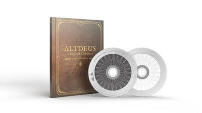

みなさん、こんばんは。
4月15日に発売されたPlayStation VR版『ALTDEUS: Beyond Chronos（アルトデウス: ビヨンドクロノス）』はもうプレイしてくださいましたか？
既にたくさんの感想を頂いており、大変嬉しい限りです。
もうプレイしたよ！という方も、これからプレイするよ！という方も、本作を遊んでの率直な感想をストアレビューやTwitterなどで書いてもらえますとスタッフ一同の励みになります！
是非よろしくお願いしますね。
それでは昨日に続き、MyDearestスタッフが選ぶ『アルトデウス: BC』のオススメ曲をお届けします！
本日は第2回です！
早速ですが、是非お読みください！
（初回の記事はこちら！）
https://altdeus.com/news/20210415_323.html
現在MyDearest Storeで『ALTDEUS: Beyond Chronos Original Sound Track』の再販予約を受付中です！
MyDearestの作曲家・郡陽介に加え、MONACAの高橋邦幸さん、kzさんなど豪華クリエイターが参加。また、ASCAさんやR!Nさん、ウォルピスカーターさん、YuNiさん、セツコさんなど実力派シンガーがOPEDを彩っています。
本作をプレイして音楽に魅了された皆さま、是非この機会にご予約ください！
【予約はこちらから↓】
【再販】ALTDEUS: Beyond Chronos Original Sound Track

川野優希 (宣伝プロデューサー) のオススメ曲
『Daybreak』 作曲：郡陽介
収録されている楽曲全てが神曲なので、1曲に絞るのが難しい...。ただ「1曲限定」でというお題だったので、この曲を選びました。『Daybreak』。本編をプレイされた方はご存知だと思うのですが、この曲は××なシーンで流れます。あれは2020年の夏が過ぎたくらいの時期だったでしょうか。作曲の郡さんと「『Sunlight』が神曲過ぎていつも聴いている」なんていつものようなトーンでお話をしました。その時、この曲のピアノバージョンがあったら絶対感動しそう！と盛り上がったことを今でも覚えています。コミュニケーションって大事ですね。しかも『Daybreak』はサントラに収録されるにあたって、再録されています。本編よりも豪華でリッチな響きになっているんです。ぜひ、それぞれのバージョンを聴いていただけると嬉しいですね。CDって中々買わなくなっちゃいましたけど、サントラは作品の想い出を形として残す意味で大切なモノだと思います。『アルトデウス: BC』のサントラ、素晴らしいです。ぜひ、たくさん聴いてくださいね。
朝倉温貴 (アシスタントプロデューサー) のオススメ曲
『Be Your Light』 作曲：kz(livetune) 歌：ノア(R!N)
『アルトデウス: BC』は印象的な曲が多く、どの曲を聞いても影像と共にクロエとして体験した感情が浮かび上がってくるのですが、その中でも一番優しい気持ちになれる楽曲、kzさんが作曲された『Be Your Light』をおすすめしたいです！ノアが人々を安心させるため、笑顔にするために歌ったこの曲を、僕は何度も何度もライブに出向き聴いていたのですが、飽きることなんて一切なく毎回新鮮な気持ちで楽しんでました！この綺羅びやかで幻想的な影像が浮かぶ神曲がなんと！サントラではフルバージョンで聴くことができます！本編では聴けなかったCメロからラスサビに向けての盛り上がりが最高に心地よいので、ノアライブを楽しんだ皆さま、是非ともお聴きになって欲しいです！
八木田肇 (アニメーター / 演出) のオススメ曲
『vs Yamato』 作曲：郡陽介 歌：アニマ(石川由依)
監督させていただいたアニメーションPVでも採用させていただいた大好きな曲です。
意思・力強さ・悲痛さ・神聖さ・切なさ・やさしさなどいろんな表情を感じる曲でこれをゲーム内で聞くと叫びたくなります。
「ヤマトォォォォォォォォォォォ！！」
他にもたくさんとても素晴らしい曲がありますので是非サントラ聞いていただけると嬉しいです。
崎山礼加 (3Dアーティスト) のオススメ曲
『Sacrifice and Farewell』 作曲：田中孝,郡陽介
「あのバトル」の曲は他の方が上げていたのでこちらを。演出を組んだりデバックをしているときにこの曲を聴くとしばらく鼻歌がこの曲になっていました。ジュリィの禍々しさがよく出ている、良い意味で気持ちの悪い音程で癖になる曲だと思います。
『ALTDEUS: Beyond Chronos Original Sound Track』 再販予約受付中！
製品情報
近未来の情景を彩る調べと、電子人形の歌姫。
VRゲーム『アルトデウス: BC』のサウンドトラックが誕生！郡陽介、高橋邦幸（MONACA）、kzが手掛けた全ての劇伴、劇中歌、全EDテーマを完全収録。この音楽も夢じゃない――。全41曲入り。
製品内容：
オリジナルサウンドトラック（CD2枚）
16ページブック型ケース
クリアステッカー8種（各6cm）
歌詞カード
※曲目は商品画像参照
発売元: MyDearest株式会社
#アルトデウスBC
※予約受付は4/30まで、発送は2021年上旬頃となります。